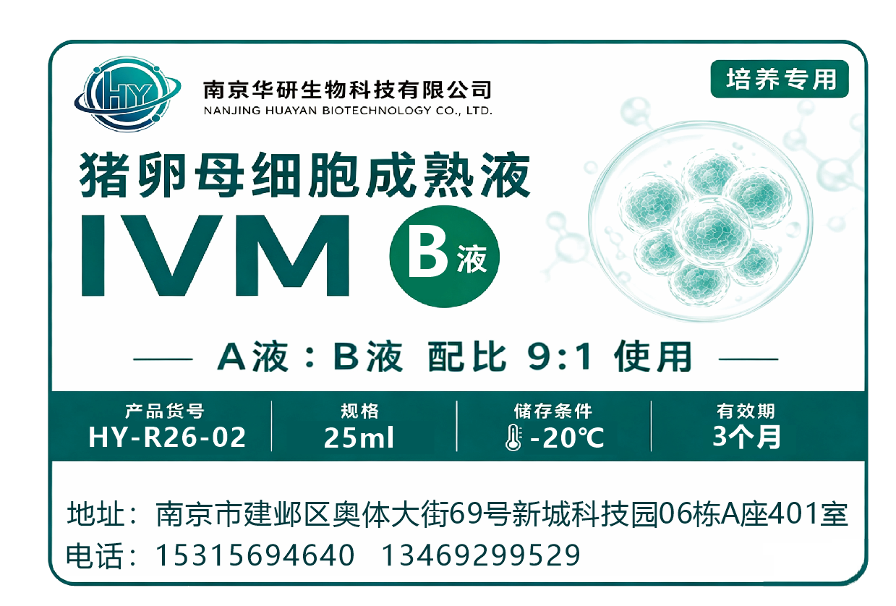
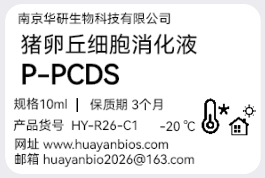
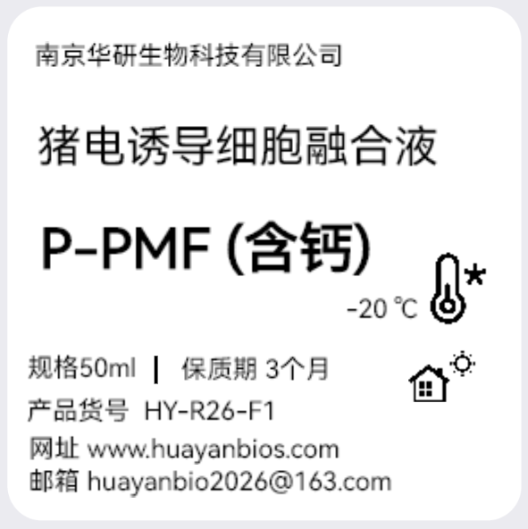
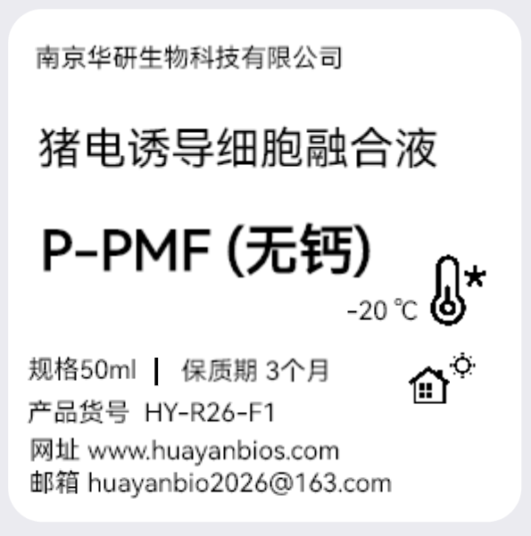
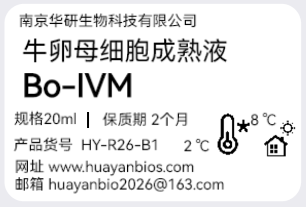
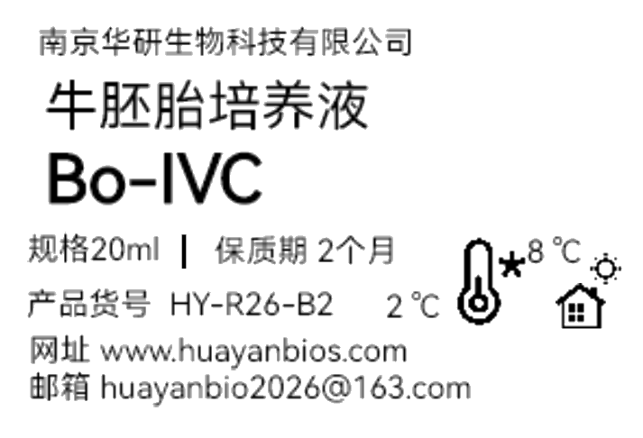
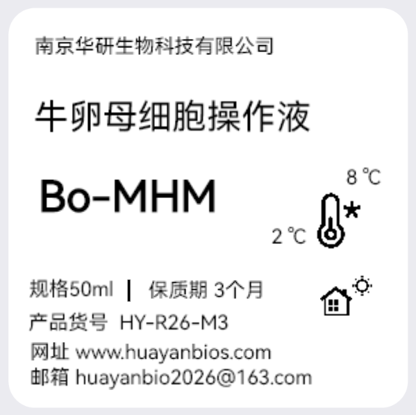
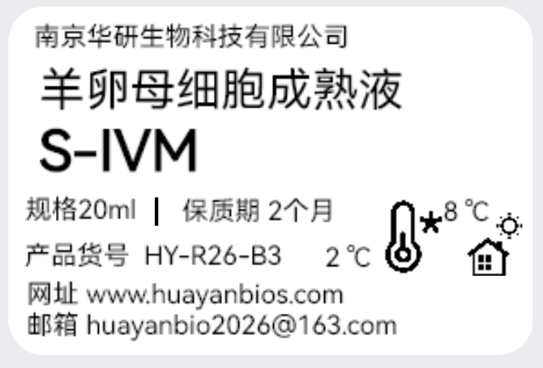
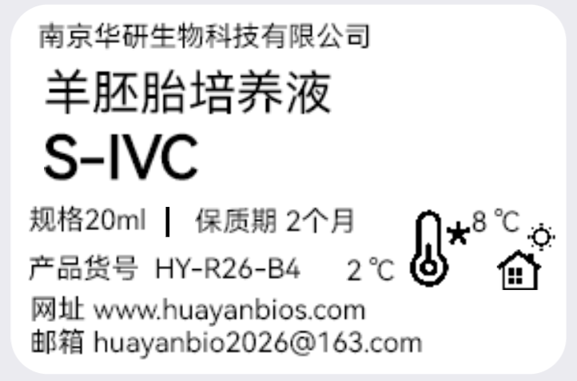
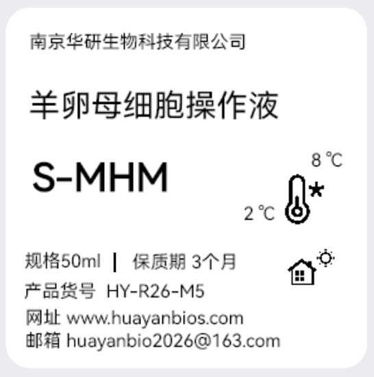

PRODUCTS
产品中心
覆盖猪、牛和羊卵母细胞体外成熟至胚胎发育全流程，提供即用型高品质试剂。
IVM 成熟
猪卵母细胞成熟液A液
猪卵母细胞成熟液组分A，与成熟液B液混合后配制成完整的猪卵母细胞成熟培养液，用于猪卵母细胞体外成熟全过程（42-44小时）。
50mL/瓶即用型4°C保存

IVM 成熟
猪卵母细胞成熟液B液
猪卵母细胞成熟液组分B，与成熟液A液混合后配制成完整的猪卵母细胞成熟培养液，用于猪卵母细胞体外成熟全过程（42-44小时）。
25mL/瓶即用型-20°C保存
IVC 培养
猪胚胎培养液
猪受精卵至囊胚阶段体外培养经典PZM-3配方。含BSA、氨基酸、谷氨酰胺等，批间一致性好。
25mL/瓶即用型4°C保存
操作液
猪卵母细胞操作液
卵母细胞采集、洗涤、挑选及显微操作专用，室温操作稳定。
50mL/瓶即用型4°C保存
激活试剂盒
猪卵母细胞孤雌激活试剂盒
含激活液A和激活液B，两步法完成猪卵母细胞孤雌激活。配套详细使用说明书。
1.5mL×2即用型-20°C避光

消化液
猪卵丘细胞消化液
猪卵丘-卵母细胞复合体消化专用，高效去除卵丘细胞。温和配方，不损伤卵母细胞活性。
即用型-20°C保存

融合液
猪电诱导细胞融合液-含钙
猪卵母细胞电融合专用，含钙配方。适用于体细胞核移植及电激活实验。
即用型-20°C保存

融合液
猪电诱导细胞融合液-无钙
猪卵母细胞电融合专用，无钙配方。适用于特定电激活及电融合实验方案。
即用型-20°C保存

IVM 成熟
牛卵母细胞成熟液
牛卵母细胞体外成熟专用培养液，优化的激素与生长因子配比，适用于屠宰场卵巢来源卵母细胞。
25mL/瓶即用型4°C保存

IVC 培养
牛卵母细胞胚胎发育液
牛受精卵至囊胚阶段体外培养液，支持高囊胚率和囊胚质量，适用于IVF和SCNT胚胎。
25mL/瓶即用型4°C保存

操作液
牛卵母细胞操作液
牛卵母细胞采集、洗涤及显微操作专用，室温下稳定维持卵母细胞活性。
50mL/瓶即用型4°C保存
激活试剂盒
牛卵母细胞孤雌激活试剂盒
含激活液A和激活液B，两步法完成牛卵母细胞孤雌激活。配套详细使用说明书。
1.5mL×2即用型-20°C避光

IVM 成熟
羊卵母细胞成熟液
羊卵母细胞体外成熟专用培养液，优化的激素与生长因子配比，适用于屠宰场卵巢来源卵母细胞的体外成熟培养。
25mL/瓶即用型4°C保存

IVC 培养
羊胚胎培养液
羊受精卵至囊胚阶段体外培养液，支持高囊胚率和囊胚质量，适用于IVF和SCNT胚胎的体外发育。
25mL/瓶即用型4°C保存

操作液
羊卵母细胞操作液
羊卵母细胞采集、洗涤及显微操作专用，室温下稳定维持卵母细胞活性。
50mL/瓶即用型4°C保存
激活试剂盒
羊卵母细胞孤雌激活试剂盒
含激活液A和激活液B，两步法完成羊卵母细胞孤雌激活。配套详细使用说明书。
1.5mL×2即用型-20°C避光